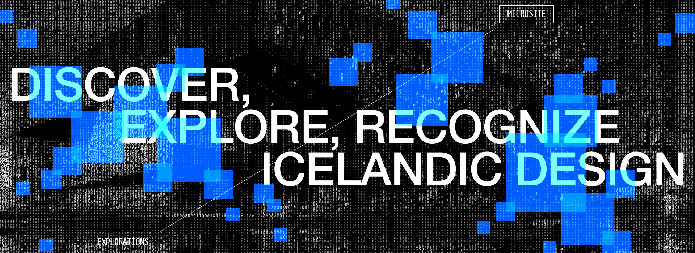
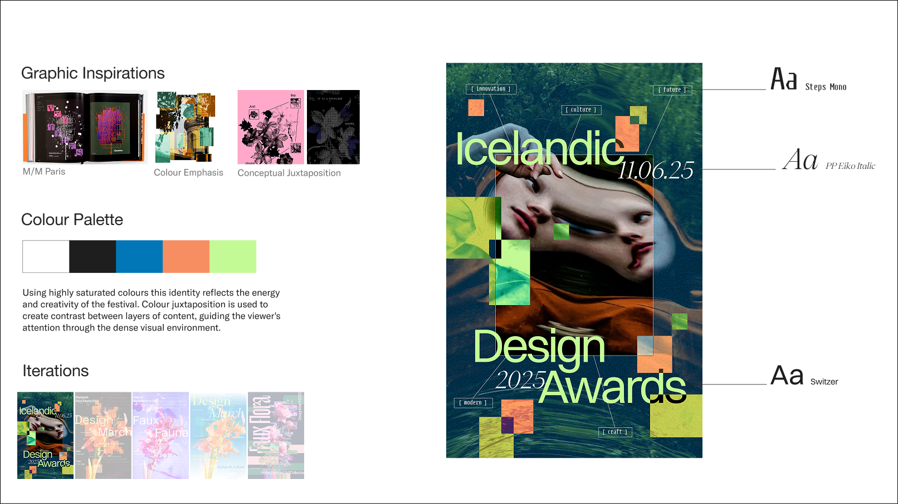
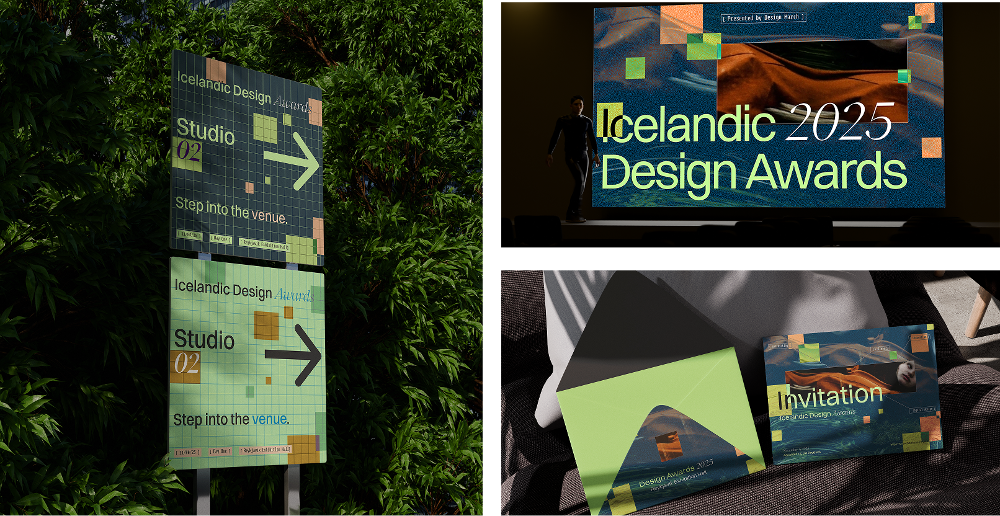
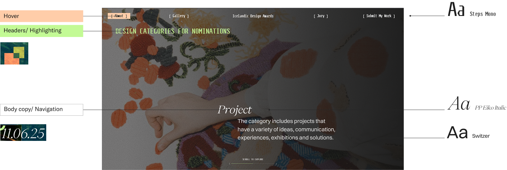
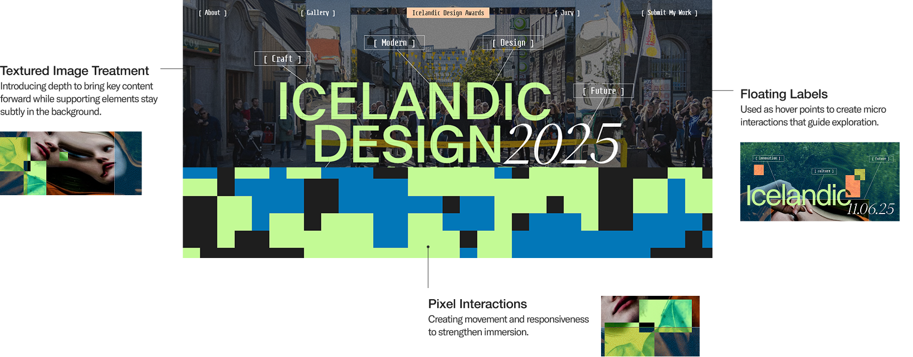
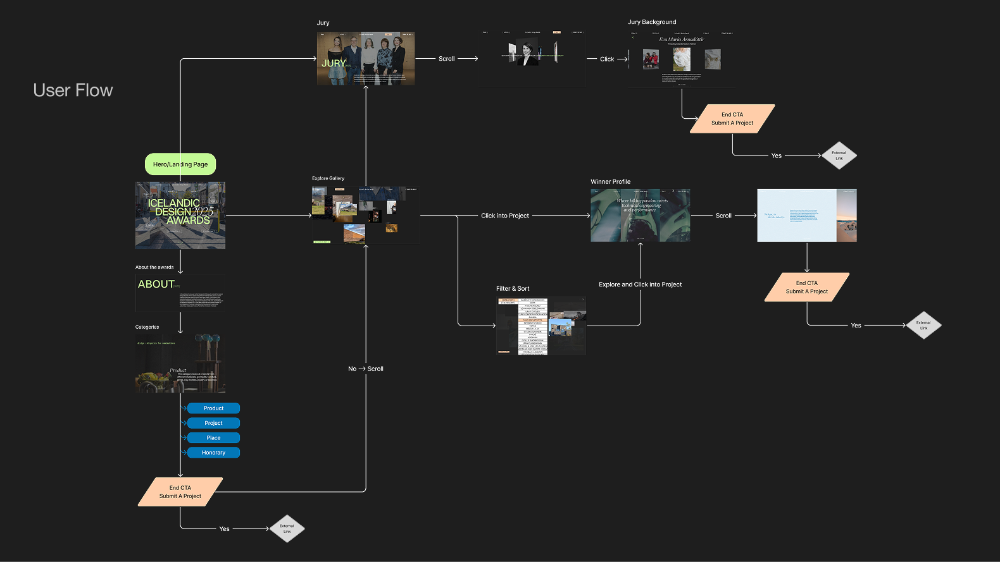

Icelandic Design Awards
Overview
DesignMarch turns Reykjavík into a citywide exhibition of Icelandic design. In a four-week UX course, my team of four created a visual identity and microsite for the Icelandic Design Awards, an archive that leads with winners’ stories and invites local designers and architects to nominate their own work.
I established core design principles through a final poster with assets by pairing typography and colour. Additionally, I developed wireframes and prototypes for the microsite to help map user flows with interactive landing pages.
The Challenge
Nominations to the Icelandic Design Awards are self-submitted. Designers and architects have to decide their work is worth putting forward. We asked how might winners’ stories make that decision feel natural?
Who it’s for
Local Icelandic designers and architects who take part in the festival. Seeing the people and values behind past winners shows them what recognition looks like and that they belong in that group.

Phase 1: Visual Brand
and Development
We studied precedent designer Eddie Opara and distilled his work into two qualities to carry forward: meaning through conceptual contrast and selective colour emphasis, paired with Ellen Lupton’s principle of colour. Week 1 critique showed we were surfacing too much and under-using the typeface. In Week 2 I narrowed the content and made type carry the movement.
My poster became the team’s direction because its type movement and flexible image treatment worked across content. It also captured the tension between traditional craft and emerging digital art that DesignMarch showcases.

Phase 2: Visual System
& Asset Translation
I turned the poster into a system the team could build with. A saturated palette carries the festival’s energy. The type pairs Switzer (structure), PP Eiko Italic (movement and emphasis) and Steps Mono (contrast). A pixel-based image treatment keeps depth consistent across any photo. We stress-tested the system across three microsite directions (discovery, exploration, recognition) and moved forward with recognition, because it best fit the awards goal.
Developing the microsite


Prototyping
Our goal was to get designers to submit their own work, so I designed the first two pages of the microsite around curiosity and self-selection.
Landing: I gave visitors multiple ways in (the nav bar, scrolling, or clicking anywhere) so they can choose their own path. Hovering over the tags previews the award categories, which gives people a quick look at what the awards recognize before they commit to a page. I prototyped this in Figma and built it in HTML, CSS and JS.
About Page: The page opens with video from the event, which shows the community and celebration that text can’t. As visitors scroll through the award categories, they start asking “could my work fit here?” The page ends on a call to submit a project, placed right after that moment of inspiration near the end.

Every path ends at the submission CTA. I mapped [the three routes] so no page is a dead end.
My Reflection
The most useful critique came in Week 1: we were trying to show everything. Committing to one idea (contrast) and one colour rule made every later decision faster, from the poster to the hover states. If I had more time, I’d test the gallery filter and submit CTA with real designers. We assumed placing the CTA after inspiration would raise submissions, but we never tested it.
I learned throughout this project that the goal was never just a good-looking archive. It was to make an Icelandic designer look at a winner’s story and think, “that could be me.”